Control Engineering I · Week 13 · Comparing Steady-State Error with P and PI
English translation
Edit the code and response fields in your own copy. Name: ⟦enter here⟧ / Student ID: ⟦enter here⟧
How to run
In Live Editor, click inside the code and run the current section with Run Section (Windows/Linux Ctrl+Enter, Mac ⌘+Enter). Run executes the entire document. Edit the explanations and response fields directly.
Initially run from the top, and rerun any section whose values you change. If an undefined-variable error occurs, run the preceding sections first. Outputs appear below or to the right of the code.
Environment: MATLAB Online and Control System Toolbox.
1. Calculate steady-state error
Perform the calculations below first, then compare with MATLAB results.
- Use
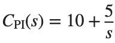
and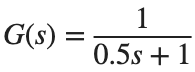
in the “3. Step tracking with P and PI” code in the practice Live Script. - Before running, write by hand the characteristic polynomials obtained from
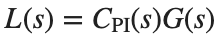
and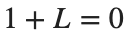
. - Check stability using the criterion that if all three coefficients of a 2nd-order polynomial are positive, both poles have negative real parts.
Here, is the position error constant. Distinguish it from the proportional gain labeled in the controller equation below.

- Determine the system type from the number of poles at the origin in L, and calculate
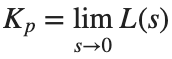
and . - After checking stability, calculate the unit step error
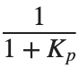
and unit ramp error , then compare them with the execution results. - Use this calculation as the baseline record for =5.

Before execution — Hand-calculated expressions and values: ⟦write calculations here⟧ After execution — MATLAB output values to compare: ⟦write output values here⟧
2. Compare pole locations
Note that the two models also differ in damping ratio.
Prediction before running: ⟦enter here⟧
T1=tf(10,[1 2 10]);T2=tf(100,[1 10 100]);
disp(pole(T1));disp(pole(T2));
figure;step(T1,T2,0:.005:10);legend('T1','T2');grid on;
Do it yourself:
The models in the “2. Compare pole locations” code in the practice Live Script are T1=tf(10,[1 2 10]) and T2=tf(100,[1 10 100]).
- Match each denominator to
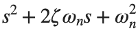
to find , and record the results in two rows. - Keep ζ of T1, and create a model changing only
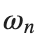
to the value from T2. Use numerator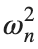
to preserve the DC gain. - On the same time axis, overlay the step responses of T1 and the new model, and tabulate the stepinfo rise time, settling time, and overshoot. Unlike the original T1 and T2 comparison, state which coefficient you held fixed this time.
% ✍ Your code: add your own code below.
Changed condition: ⟦enter here⟧
Observed result: ⟦enter here⟧
Differences from the prediction and their causes: ⟦enter here⟧
3. Step tracking with P and PI
Use a sufficiently long duration to include slow modes.
Prediction before running: ⟦enter here⟧
s=tf('s');G=1/(.5*s+1);P=10;PI=10+5/s;
Tp=feedback(P*G,1);Tpi=feedback(PI*G,1);t=0:.01:30;
figure;step(Tp,Tpi,t);legend('P','PI');grid on;
disp([1-dcgain(Tp),1-dcgain(Tpi)]);
Do it yourself:
- Keep the baseline plant G=1/(0.5*s+1) and build the closed loop with P gain . Record the theoretical unit-step error beside 1-dcgain(Tp).
- Keep the PI controller's and apply each . Plot the three unit-step curves on the same time axis and label in the legend.
- For each , record 1-dcgain(Tpi) and the settling time and overshoot returned by stepinfo(Tpi). Compare the final error separately from the transient response metrics.
% ✍ Your code: add your own code below.
Changed condition: ⟦enter here⟧
Observed result: ⟦enter here⟧
Differences from the prediction and their causes: ⟦enter here⟧
4. Ramp tracking
Distinguish the last time sample from the limiting value.
Prediction before running: ⟦enter here⟧
s=tf('s');G=1/(.5*s+1);Tp=feedback(10*G,1);Tpi=feedback((10+5/s)*G,1);
t=(0:.01:30)';r=t;yp=lsim(Tp,r,t);yi=lsim(Tpi,r,t);
figure;plot(t,r-yp,t,r-yi);legend('P error','PI error');xlabel('Time (s)');ylabel('Tracking error');grid on;
disp([r(end)-yi(end),1/5]);
Do it yourself:
- Build the loop
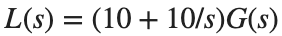
in the “4. Ramp tracking” code in the practice Live Script and determine the system type from the number of denominator poles at the origin. is the same as in the preceding activity. - Find
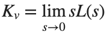
and calculate the unit-ramp error . - Keep the same time vector and ramp input. Change the code’s integral gain from 5 to the value 10 given in this activity, and rebuild the PI model using the same time axis and ramp input, and use lsim to find output y. Write the last sample's
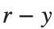
beside the calculated and record their absolute difference.

% ✍ Your code: add your own code below.
Changed condition: ⟦enter here⟧
Observed result: ⟦enter here⟧
Differences from the prediction and their causes: ⟦enter here⟧
Practice through repetition and check before submission
Summarize the three conditions compared in the preceding hands-on activities below. You do not need to repeat experiments already completed. Predictions may state increasing or decreasing trends instead of exact values.
Repetition 1 — Condition: ⟦enter here⟧ / Prediction: ⟦enter here⟧ / Actual result: ⟦enter here⟧
Trial 2 — Condition: ⟦enter here⟧ / Prediction: ⟦enter here⟧ / Observation: ⟦enter here⟧
Trial 3 — Condition: ⟦enter here⟧ / Prediction: ⟦enter here⟧ / Observation: ⟦enter here⟧
Optional:
Example: using a constant for the integral term in a PI controller
- In a copy of the “3. Step tracking with P and PI” code in the practice Live Script, replace PI=10+5/s with PI=10+5, then rebuild feedback(PI*G,1).
- Record 1-dcgain(Tpi) before and after the change, and compare whether there is a pole at the origin. Change only the controller definition line to 10+5/s.
Include code, actual outputs and plots, and your own interpretation. Submit through KLAS; check the semester schedule and latest announcements for the deadline.
Filename: Name_StudentID_Week13.mlx.